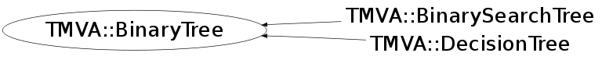

Function Members (Methods)
This is an abstract class, constructors will not be documented.
Look at the header to check for available constructors.
public:
| virtual | ~BinaryTree() |
| virtual void* | AddXMLTo(void* parent) const |
| static TClass* | Class() |
| virtual const char* | ClassName() const |
| UInt_t | CountNodes(TMVA::Node* n = NULL) |
| virtual TMVA::Node* | CreateNode(UInt_t size = 0) const |
| virtual TMVA::BinaryTree* | CreateTree() const |
| TMVA::Node* | GetLeftDaughter(TMVA::Node* n) |
| UInt_t | GetNNodes() const |
| TMVA::Node* | GetRightDaughter(TMVA::Node* n) |
| virtual TMVA::Node* | GetRoot() const |
| UInt_t | GetTotalTreeDepth() const |
| virtual TClass* | IsA() const |
| TMVA::BinaryTree& | operator=(const TMVA::BinaryTree&) |
| virtual void | Print(ostream& os) const |
| virtual void | Read(istream& istr, UInt_t tmva_Version_Code = TMVA_VERSION_CODE) |
| virtual void | ReadXML(void* node, UInt_t tmva_Version_Code = TMVA_VERSION_CODE) |
| void | SetRoot(TMVA::Node* r) |
| void | SetTotalTreeDepth(Int_t depth) |
| void | SetTotalTreeDepth(TMVA::Node* n = NULL) |
| virtual void | ShowMembers(TMemberInspector& insp) |
| virtual void | Streamer(TBuffer& b) |
| void | StreamerNVirtual(TBuffer& b) |
Class Charts
{kind=link}
{kind=link}
{kind=link}
{kind=link}

Function documentation
void DeleteNode(TMVA::Node* )
protected, recursive, function used by the class destructor and when Pruning
UInt_t CountNodes(TMVA::Node* n = NULL)
return the number of nodes in the tree. (make a new count --> takes time)
void Read(istream& istr, UInt_t tmva_Version_Code = TMVA_VERSION_CODE)
Read the binary tree from an input stream. The input stream format depends on the tree type, it is defined be the node of the tree
void SetTotalTreeDepth( Node *n)
descend a tree to find all its leaf nodes, fill max depth reached in the tree at the same time.
Node* CreateNode(UInt_t size = 0) const
BinaryTree* CreateTree() const
const char* ClassName() const
UInt_t GetNNodes() const
get number of Nodes in the Tree as counted while booking the nodes;
{ return fNNodes; }